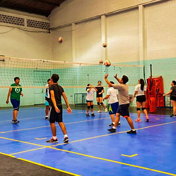

El voleibol de sala es considerado como uno de los deportes más competitivos y populares en el mundo y en Guatemala no es la excepción. Actualmente, se imparten clases en diferentes lugares de la ciudad.
Campo Marte:
- Horarios: 9:00 a 12:00 horas — 15:00 a 17:00 horas.
- Días: lunes, miércoles y viernes.
- Edad: Sin límite
- Requisitos: certificación de nacimiento o DPI (para mayores de edad), fotocopia del DPI de la persona encargada (en caso de ser menor de edad), fotografía tamaño cédula y exámenes médicos (se realizan ahí mismo).
- Costo: Gratis
- Teléfono: 2267-2409.
- Dirección: 2a. calle final, 15a. avenida, zona 5.

Asociación Nacional:
- Día: Sábado
- Horarios: 8:00 a 10:00 horas y 10:00 a 12:00 horas.
- Edades: 9 a 17 años.
- Requisitos: 2 fotografías tamaño cédula, 2 fotocopias de partida nacimiento
- Costo: Q 150.00 mensualidad y Q 35.00 del carné
- Teléfono: 2296-0444.
- Dirección: Gimnasio 7 de diciembre, 26 calle, 9-31, Zona 5.